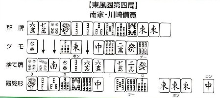

川崎備寛（かわさきよしひろ）、通称「かわさきびかん」は、昭和38年に死去した。その際、日本麻雀連盟より名人位を追贈された。これは日本最初の名人位であり、現在まで、その例はない。それほどの打ち手であったし、卓越した戦術論を残している。
じつは川崎備寛氏は、σ(-_-)の師匠である大西太郎氏の師匠にあたる。そんなこともあって、会ったことはないが、なんとなく親しみを感じている。
その川崎名人の、ある日の雀譜。

二十二麻雀（アルシーアルマージャン）なので、現代麻雀とはアガリ役の翻数とか得点形態が全然異なる。とうぜん現代麻雀とは打ち筋も異なってくる。
二十二麻雀でこの配牌を見たら、まずは の一翻をモノにしたいと思う（他に符が無ければ、のみで200点。現在の一般麻雀３千点ほどに相当する）。次ががからんだ混一色。あとは欲で、チャンタか一通、あるいは の一翻をモノにしたいと思う（他に符が無ければ、のみで200点。現在の一般麻雀３千点ほどに相当する）。次ががからんだ混一色。あとは欲で、チャンタか一通、あるいは を重ねた手。 を重ねた手。
＃二十二麻雀にサンシキはない。
二十二麻雀は役ナシでもアガれるので、全員テンパイが早い。それも念頭に置いて、５巡目にポンの速攻。そして６巡目までは、  ロンによるアガリも考えた打ち回し。 ロンによるアガリも考えた打ち回し。
７巡目に を引いて、混一へ切り替え。あとはなりゆきのアガリ。まぁ、正直言ってどうこういうほどの局ではない。 を引いて、混一へ切り替え。あとはなりゆきのアガリ。まぁ、正直言ってどうこういうほどの局ではない。
それじゃあこれをσ(-_-)が現代式で打ったら、どうなるか。
まず第１ツモの 。これが運命の分かれ道。ここでをツモ切りしていれば、次の 。これが運命の分かれ道。ここでをツモ切りしていれば、次の ツモでサンシキめが出てくる。 σ(-_-)は、まず ツモ切りなので、 ツモで ツモでサンシキめが出てくる。 σ(-_-)は、まず ツモ切りなので、 ツモで を切る可能性が強い。 を切る可能性が強い。
          
そうなると、５巡目のもポンしないので、あとはどうなるかワカラン。
もし第１巡めに を切っていれば、逆に混一、一直線。もちろん５巡目のもポンだが、当然ここで を切っていれば、逆に混一、一直線。もちろん５巡目のもポンだが、当然ここで 切りはない。ポンの段階でこうなっている。 切りはない。ポンの段階でこうなっている。
  
 ↓ ↓
あとはたぶん、こんな感じ。
生牌 チー
↓   ↓ ↓  
 ？ ？
 チーの段階で何を切るか分からないが、たぶん。 チーの段階で何を切るか分からないが、たぶん。

いずれにしても、大した変わりはないか。(-_-；
|